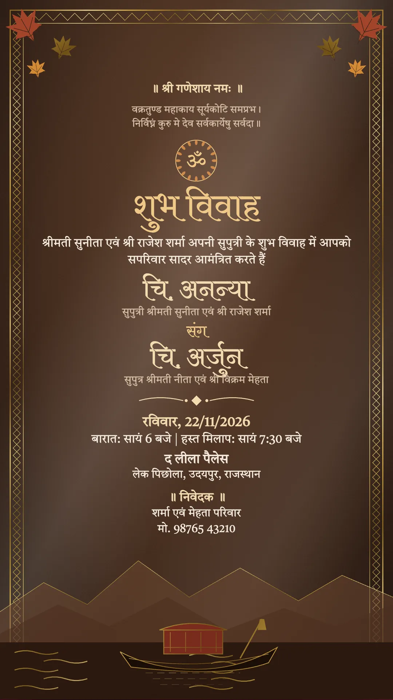
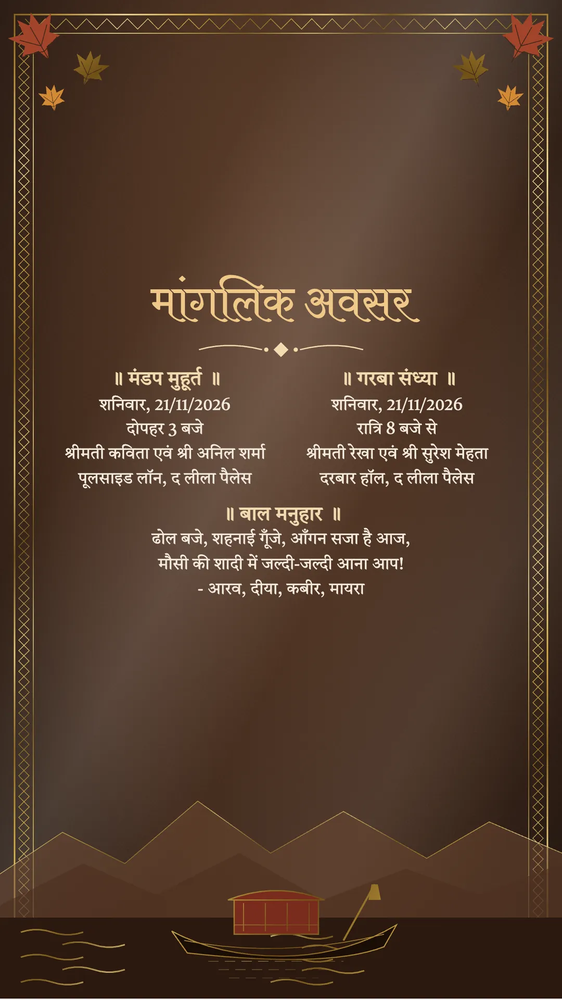
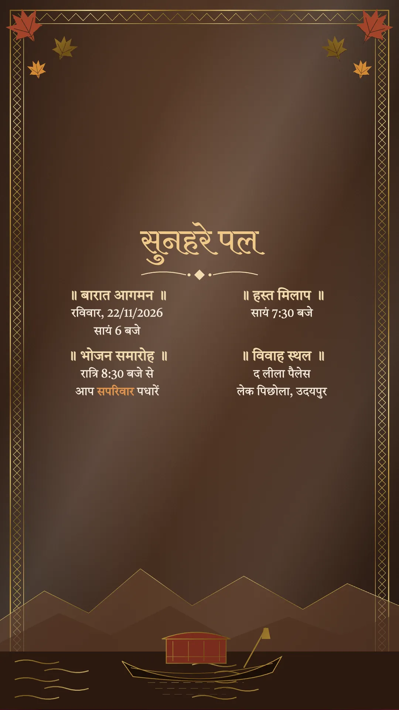
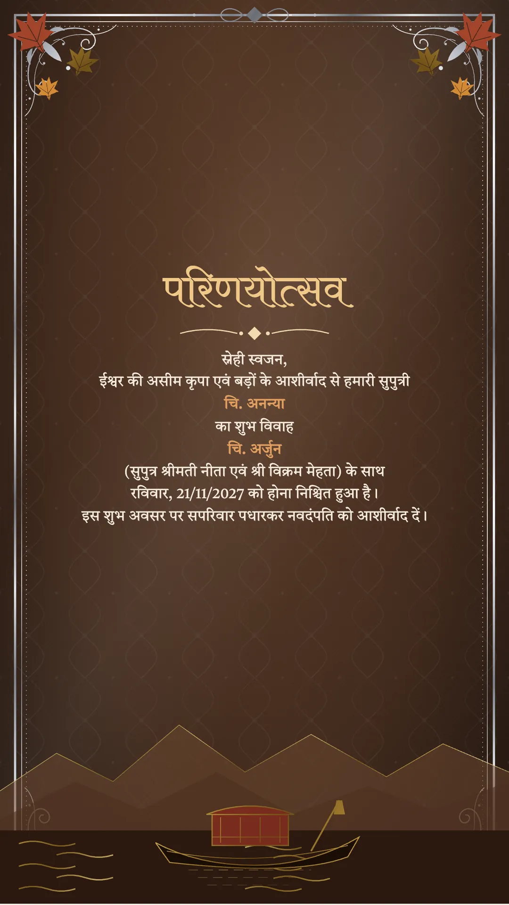
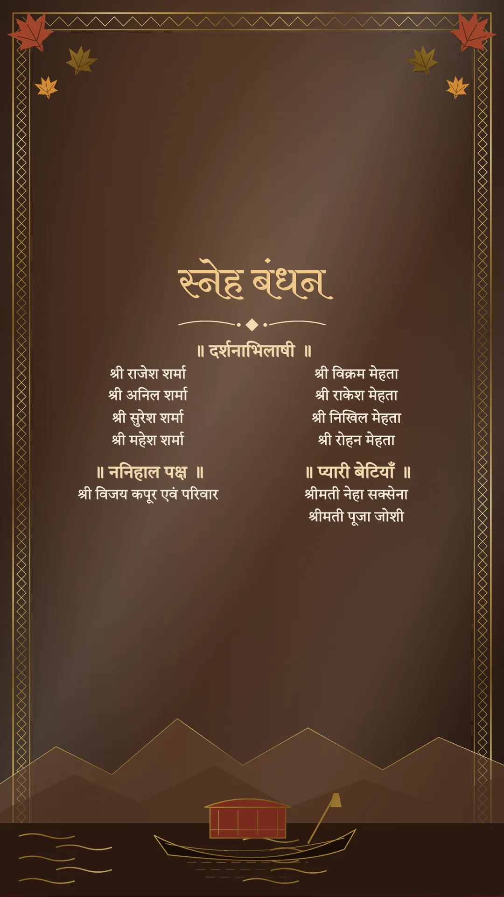
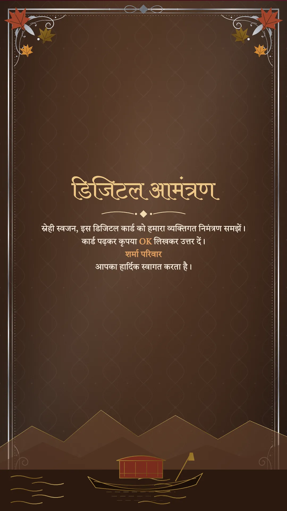

Designs › Wedding (Vivah) › Kashmiri Chinar & Shikara
Kashmiri Chinar and Shikara: Hindi wedding card

- Ceremony: Wedding (Vivah)
- Language: Hindi
- God or sacred symbol: Lord Ganesha
- Format: WhatsApp image (1080 x 1920 px) and 5 x 7 inch print PDF
- Pages: 6 (cover, functions, wedding-day programme, letter, family names, closing message)
About this design
Walnut brown, like carved Kashmiri woodwork, lighter at the centre and darker at the edges. A gold double frame runs round the card with a lattice of small diamonds down the sides and a zigzag along the top. Chinar leaves in rust red, olive and amber sit in the two top corners. At the bottom, layered brown mountains with gold ridgelines rise behind Dal Lake, where a shikara with a red canopy and a gold oar floats on gold wave lines. The frame, leaves and lake repeat on all six pages.
The Hindi cover opens with ॥ श्री गणेशाय नमः ॥ and the Vakratunda shlok, then an Om emblem in a gold ring and शुभ विवाह set large in gold. The parents' invitation line is in cream, the names with चि. are in large gold letters with the parents' names in small type beneath, and the time line gives the baraat at 6 and the hast milap at 7:30 in the evening, followed by the venue and the निवेदक block.
It is a good choice for Kashmiri families, or anyone who wants a Hindi card that looks different from the usual red and gold. The wording is the shared Hindi wedding sample, so check it against your own functions. On page 2 the sample lists a मंडप मुहूर्त and a गरबा संध्या; garba is a Gujarati dance evening, so replace it with a function you are actually holding. The baraat and hast milap times on the cover and page 3, and the Udaipur hotel, are placeholders to change. The family page lists the दर्शनाभिलाषी, the maternal side and the daughters of the house.
Compared with Shubh Vivah Traditional, which is also in Hindi with the Ganesha shlok and a full set of pages, Kashmiri Chinar swaps the saffron, marigold toran and kalash for dark wood tones and a landscape. Royal Udaipur Maroon and Gold is the English option in a similar formal style.
All 6 pages
The cover is shown above. These are the other pages exactly as the card opens in the editor, with the sample family names.





Sample wording on this card
The card opens in the editor with this text. Change any line, or switch the card to another language.
॥ श्री गणेशाय नमः ॥
वक्रतुण्ड महाकाय सूर्यकोटि समप्रभ।
निर्विघ्नं कुरु मे देव सर्वकार्येषु सर्वदा॥
शुभ विवाह
श्रीमती सुनीता एवं श्री राजेश शर्मा अपनी सुपुत्री के शुभ विवाह में आपको सपरिवार सादर आमंत्रित करते हैं
चि. अनन्या
सुपुत्री श्रीमती सुनीता एवं श्री राजेश शर्मा
संग
चि. अर्जुन
सुपुत्र श्रीमती नीता एवं श्री विक्रम मेहता
रविवार, 21/11/2027
बारात: सायं 6 बजे | हस्त मिलाप: सायं 7:30 बजे
द लीला पैलेस
लेक पिछोला, उदयपुर, राजस्थान
निवेदक
शर्मा एवं मेहता परिवार
मो. 98765 43210
The other five pages are मांगलिक अवसर (the functions before the wedding), सुनहरे पल (the wedding-day programme), परिणयोत्सव (the letter), स्नेह बंधन (the family names) and डिजिटल आमंत्रण (the closing message).